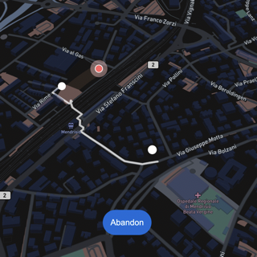
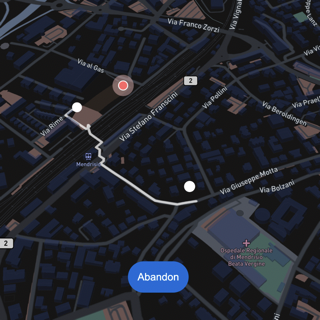

Sofia Nunnari
Anti-Target
The "Anti-Target," a Creative Coding project that aims to provide users with a practical tool to avoid
unwanted encounters (such as two exes agreeing not to see each other again). Using a mix of HTML, CSS, and
JavaScript, this project offers alternative route suggestions integrated with maps from MapBox, a versatile
platform for creating customized map experiences.
When the person you'd like to avoid is nearby, the app will send you a personalized notification with
directions for where to "escape" in real time.
Unfortunately, due to github storage space limitations (25 Mb), I cannot add more pictures and videos.
THE TOOL
MAP (LOCATIONS)

 


PRESENTATION TOOL
WEB PLATFORM
This web platform shows the home page upon detection of your anti-target (such as your ex). Each time the page loads, the advice changes and is updated.

The red dot (as seen in the image before) represents your anti-target, while the white dot is your representation. By navigating the map and zoom out to get as far away from your anti-target as possible, clicking will display the route, duration time, and guided voice navigation.
BACKSTAGE
Here you can see just a few photos and videos of the work-in-progress project. There are some videos also posted on my instagram stories to share the development of my project.

First use of MapBox, I was testing the caclulus of the distance between two devices at random points at each loading
First UI Mockup


First programming to test the MapBox map.
Programming development, I attempted to simulate a real navigator. Unfortunately, MapBox does not offer car mapping navigation in the web version, so I attempted to simulate it and rewrite it myself by hand. Unfortunately since the risltato is "fake" i.e. the navigator doesn't really work since I have to manually set the coordinates to it (instead the point of my project is that it should work automatically) I had to delete that part and rework it.
(TEST) Development of navigation with evidence of the route plus calculation duration of it.